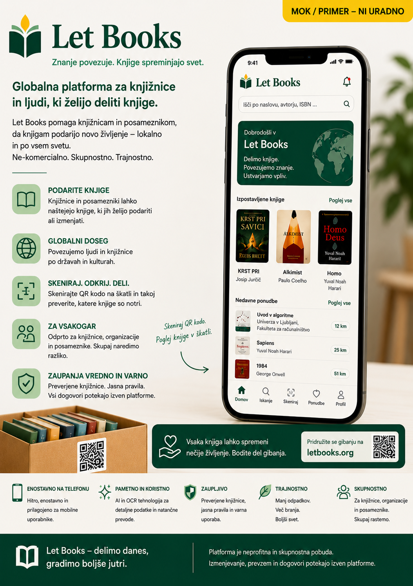

Institucionalni primeri na tej strani so zgolj konceptualni opisi potekov dela. Ne pomenijo obstoječih partnerstev, uvedb, odobritev ali podpore.
Vodič za institucije
Pregledujte ponudbe knjig na način, ki omogoča dejanske odločitve.
Let Books je prvenstveno zasnovan za knjižnicam prijazen potek dela, hkrati pa je primeren tudi za šole, univerze, arhive in nevladne organizacije, ki potrebujejo pregleden izbor in usklajen prevzem.

Kdaj je ta vodič za vas
- Pregledujete knjige, ki jih nekdo želi ponuditi.
- Potrebujete bolj urejen postopek od neformalnega dopisovanja.
- Vaše odločitve morajo biti vezane na stabilne identifikatorje.
- Pomembni so vam izvor podatkov, stanje in možnost prevzema.
Kdo spada med institucije
- Javne in akademske knjižnice
- Šole in univerze
- Arhivi in specializirane zbirke
- Nevladne in skupnostne organizacije
Kaj institucije prejmejo
Prvi res uporaben rezultat je strukturiran izvoz z dovolj konteksta za premišljen pregled, ne da bi bilo treba razkriti vse zasebne logistične podrobnosti donatorja.
Stabilni identifikatorji
Izbira naj bo vezana na ID izvoda, ne samo na naslov, ki je lahko nepopoln ali podvojen.
Bibliografski in fizični podatki
Naslov, avtor, izdaja, stanje in opombe o izvodu lahko obstajajo skupaj, ne da bi jih pomešali.
Povezava z dejansko lokacijo
Izbrane knjige ostanejo vezane na resnične lokacije, da jih je mogoče pripraviti za prevzem.
Potek pregleda
Osnovni postopek je namenoma preprost, ker bo marsikatera institucija prej sprejela preglednico kot povsem nov portal.
Prejmete izvoz
Odprete preglednico z berljivimi podatki in stabilnimi ID-ji.
Označite odločitve
Izberete želi, mogoče ali ne želi, po potrebi dodate opombo.
Vrnite datoteko
Uporabite vam znan postopek, brez obvezne nove registracije.
Donator uvozi odločitve
Odločitve se povežejo nazaj brez ugibanja po naslovih.
Nastane pick list
Zahtevani izvodi se razvrstijo po prostoru, polici in škatli.
Uskladi se predaja
Prevzem in prevoz potekata zunaj platforme, dokler prihodnje funkcije tega izrecno ne razširijo.
Zakaj je izvor podatkov pomemben
Institucionalni uporabniki morajo vedeti, ali je podatek vnesel človek, ga je predlagal OCR, prišel iz zunanjega kataloga ali bil uvožen. Poleg predloga morata biti vidna tudi stopnja zaupanja in status pregleda.
Smer interoperabilnosti
Let Books mora ostati odprt za povezave s COBISS in drugimi sistemi, vendar trenutna vrednost ne sme biti odvisna od teh povezav. Najprej prideta dober izvoz in dober uvoz.
Fizična logistika je še vedno ključna
Zahtevana knjiga je res uporabna šele, ko jo lahko nekdo hitro najde. Pick list po sobi, polici in škatli zmanjša zmedo in zmanjša verjetnost napačnega prevzema.
En zapis, več izvodov
Institucije pogosto odločajo po posameznem izvodu, ne le po naslovu. Dva izvoda istega učbenika se lahko razlikujeta po stanju, oznakah ali dostopnosti.
Primer sodelovanja: Mestna knjižnica, univerzitetni oddelek in lokalni arhiv pregledajo eno ponudbo zasebnega donatorja. Vsak izbere druge izvode glede na stanje in vsebinski interes, donator pa nato iz iste serije pripravi več pick listov.
Uporabno že pred globljimi integracijami
Manj improvizacije
Strukturirane odločitve so preglednejše od nepreglednih elektronskih sporočil.
Bolj usklajen donator
Institucije lahko jasno povedo, kaj želijo in česa ne, brez podvajanja dela.
Lažja prihodnja povezljivost
Ko so podatki enkrat strukturirani, postanejo nadaljnje integracije bistveno bolj realistične.